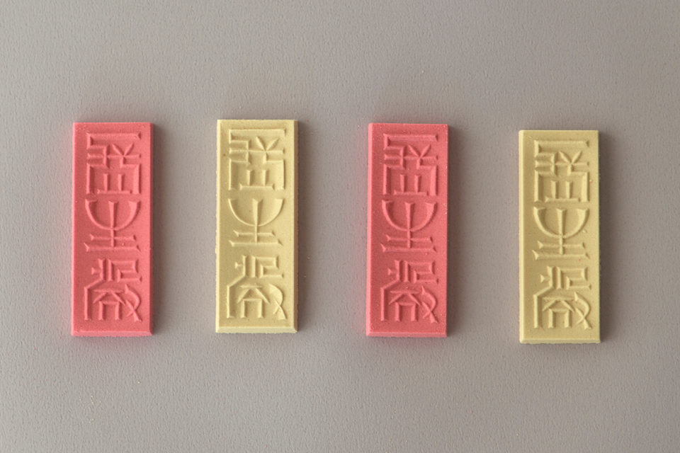
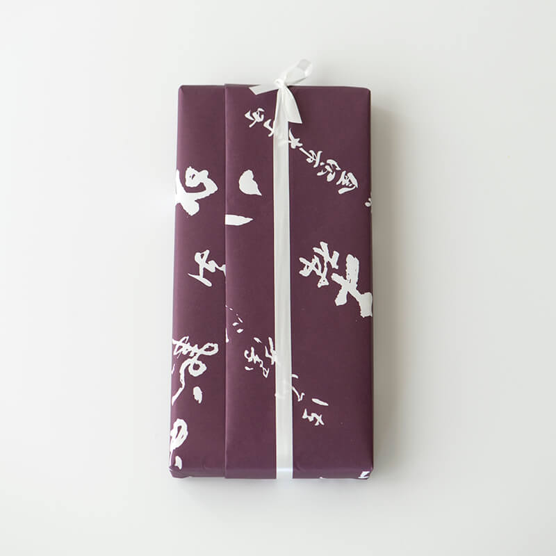
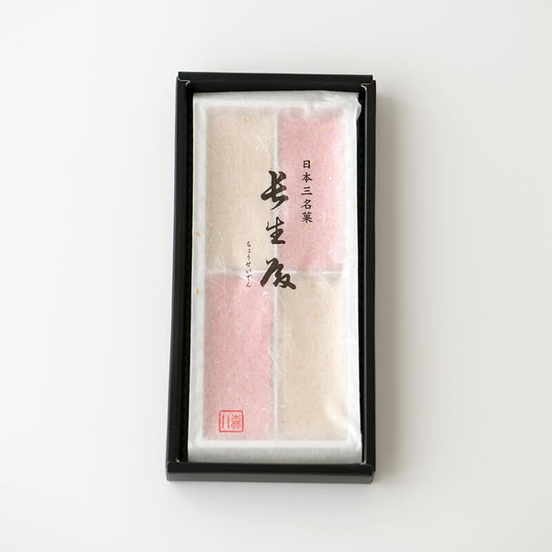
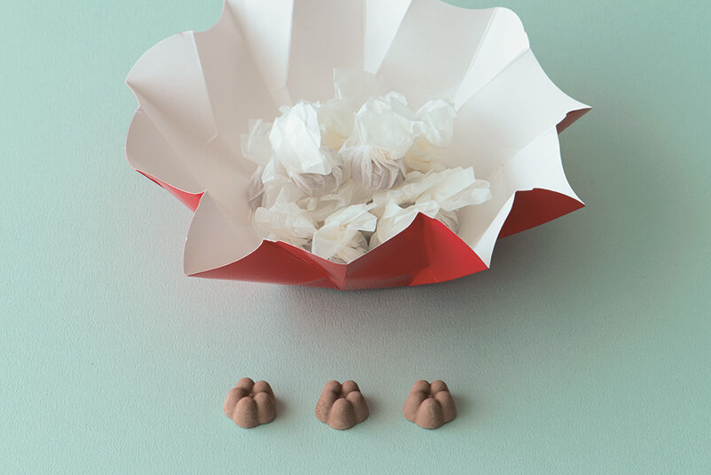
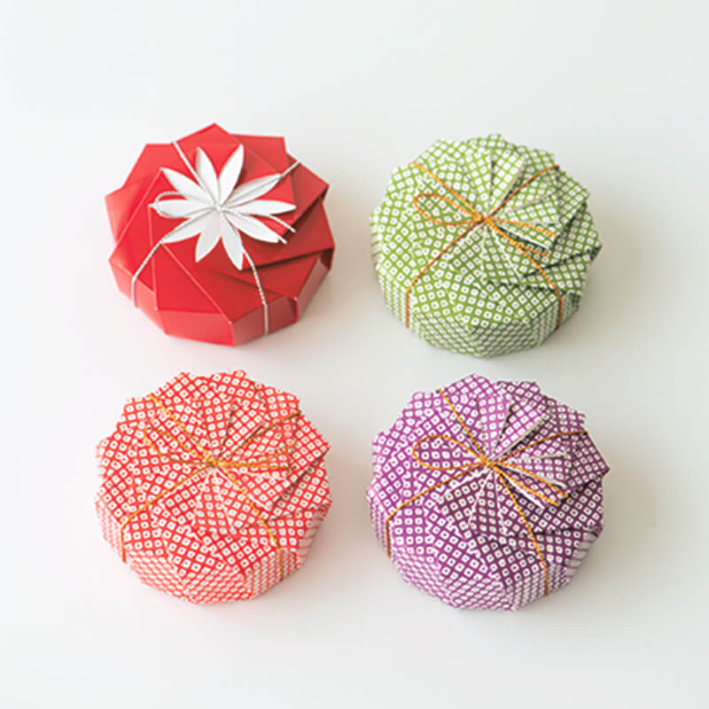
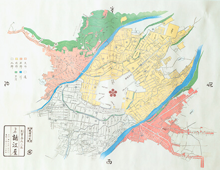
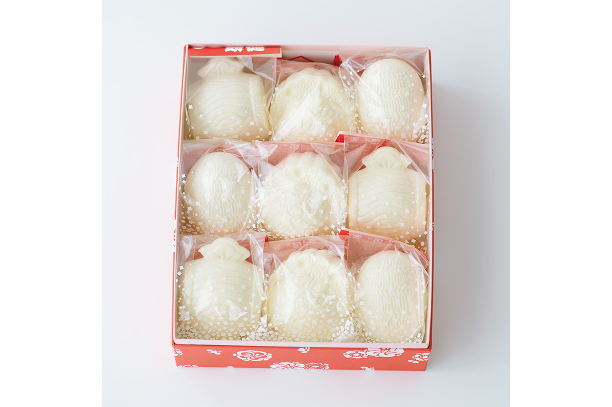
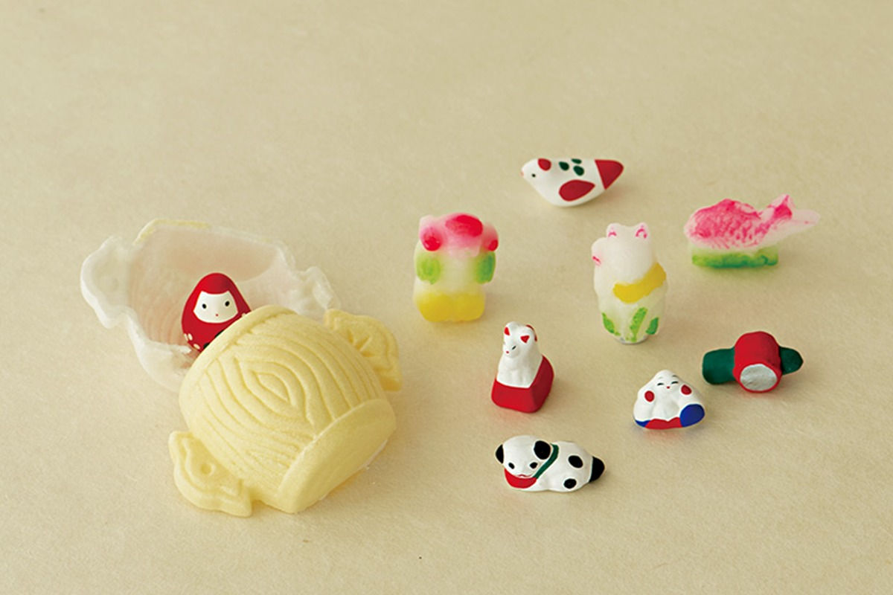
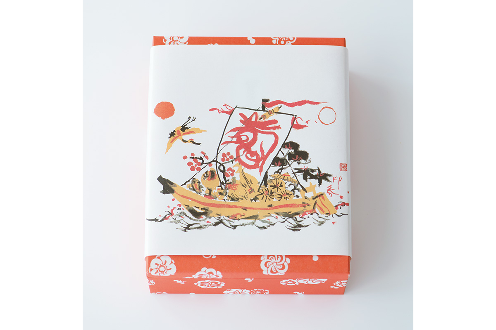

Префектура Исикава · Канадзава · сладости
Ракуган Канадзавы: сухие сладости, резные формы и движение мингэй

Ракуган, сухие сладости из рисовой муки и сахара, тают во рту и подаются к чаю. В Канадзаве их делают веками, а резные деревянные формы для них высоко ценило движение мингэй.
Morihachi
«Тёсэйдэн»: сладость, которую назвал мастер чая
Кондитерская Morihachi в Канадзаве ведёт историю с 1625 года. Самая известная её сладость «Тёсэйдэн» входит в число трёх знаменитых сладостей Японии. Плитка медленно тает на языке, и её мягкая сладость делает вкус чая ещё глубже.
«Тёсэйдэн» это красно-белый ракуган из васанбона, тонкого сахара с острова Сикоку, и клейкого риса из региона Хокурику. Его придумал третий хозяин дома по заказу Тосицунэ Маэды (1594–1658), третьего правителя княжества Кага. Название дал Кобори Энсю (1579–1647), великий мастер чайной церемонии и основатель школы Энсю. Он же написал иероглифы древним печатным письмом, их вырезали на деревянной форме, и оттиск придаёт ракугану строгую, тихую красоту.
Само слово взято из китайской поэзии. Так назывался дворец эпохи Тан, где император Сюаньцзун (685–762) и его возлюбленная Ян Гуйфэй (719–756) говорили о любви. Дворец прославил поэт Бо Цзюйи (772–846) в «Песне о бесконечной тоске», в строке о седьмом дне седьмой луны.


С движением мингэй, движением народного ремесла, Morihachi связывают деревянные формы для сладостей. В 1972 году журнал движения «Мингэй» выпустил номер о формах для сладостей Каги. В 1979 году Сори Янаги (1915–2011), промышленный дизайнер, вложил все силы в выставку «Японские формы для сладостей» в Музее народного искусства Японии, и Morihachi дал на неё много своих форм. Ту выставку уже не повторить, но на втором этаже главного магазина работает Музей деревянных форм для сладостей Канадзавы с прекрасной коллекцией, и его стоит увидеть.
Morihachi, главный магазин
- Адрес
- префектура Исикава, Канадзава, Отэмати, 10-15
- Телефон
- +81 76-262-6251
- Часы работы
- 9:00–18:30 (в январе и феврале до 18:00)
- Выходные
- без выходных
- Сайт
- morihachi.co.jp
Мороэя
La·KuGaN: ракуган в бумажном цветке
Коробка похожа на цветок. Её строгая геометрия держится, пока не потянешь за лепестки: тогда они поднимаются, закручиваются наискось и раскрываются. Так устроено «камон-ори», складывание в виде гербового цветка. Его придумал мастер оригами Мицухиро Утияма (1878–1968), и такую коробочку наверняка видел почти каждый.

За этой популярной коробкой тоже стоит движение мингэй. Сори Янаги восхищался работами Утиямы: в них, по его словам, видна традиционная японская форма и при этом очень современный, свежий облик. В январе 1982 года журнал «Мингэй» посвятил камон-ори большую тему, а в 1988 году вышла книга о мире Утиямы, которую Янаги составил и отредактировал.

Больше всего камон-ори используют для коробок со сладостями. Особенно хороша La·KuGaN «Хана-усаги» старой канадзавской кондитерской «Мороэя». Раскрываешь бумажный цветок, а из него сыплются крошечные цветки сливы, каждый в тонкой бумаге. Красная коробка со вкусом какао: в ней порошок из чистого какао, и вместе с лучшим васанбоном это сочетание удивительно вкусное.

Мороэя
«Фукутоку сэмбэй»: новогодний сюрприз

«Фукутоку сэмбэй» в «Мороэя» это традиционная новогодняя сладость Канадзавы. Тонкое печенье в форме благопожелательных предметов: мешка риса, волшебного молоточка, мешка с сокровищами. Если его разломить, внутри окажется миниатюрная народная игрушка, фигурка из сахара «кинкато» или глиняная куколка. Сюжетов около 30.

Это прежде всего игра для новогоднего стола: если ломать печенье всей компанией, праздничное настроение обеспечено. Разломанное печенье можно положить в сладкий суп из бобов адзуки или намазать сыром, тоже вкусно.

Формы
Красота пользы в деревянной форме
С движением мингэй тесно связана и «Мороэя». После основателя движения Мунэёси Янаги (1889–1961) и керамиста Сёдзи Хамады (1894–1978) третьим директором Музея народного искусства Японии стал Сори Янаги. Он нашёл «красоту пользы» в деревянных формах для сладостей: трижды делал в журнале «Мингэй» большие темы, среди них «Формы для сладостей мира» и «Японские формы для сладостей», и устроил выставку с огромным собранием форм. Для этих номеров и выставок «Мороэя» дала много своих форм. Их можно увидеть рядом с главным магазином, в «Ракуган бунко».
«Мороэя», главный магазин
- Адрес
- префектура Исикава, Канадзава, Номати, 1-3-59
- Телефон
- +81 76-245-2854
- Часы работы
- 9:00–19:00
- Выходные
- 1 января
- Сайт
- moroeya.co.jp